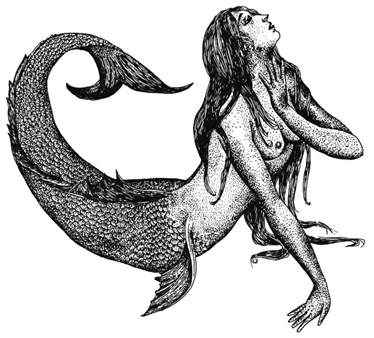

CONVOITISE
jalousie
"La jalousie précède l'imagination. La jalousie, c'est la vision plus forte que la vue."
Pascal Quignard
Pascal Quignard
Si être envieux correspond à une jalousie matérielle, la jalousie existencielle est propre à l'amour. Lorsque nous choisissons d'accorder à quelqu'un une place prépondérante dans la satisfaction de nos besoins affectifs les plus importants, nous disons que nous aimons cette personne. Or cette place de choix correspond à une dépendance qui conduit facilement à la jalousie. On peut donc dire que l'amour et la jalousie sont des expériences indissociables.
Mais la jalousie n'est pas un problème en soi. Elle n'est que l'indice de la présence d'un problème, elle naît avec l'insatisfaction et l'instabilité. On éprouve de la jalousie lorsque la relation ne répond plus tout ou partie à une satisfaction importante, on craint alors de ne plus accéder voire de perdre cette source de satisfaction. La jalousie donne lieu alors à des comportements freinants sinon destructeurs qui sabotent les fondements de la relation. Mais elle peut aussi servir d'indicateur pour amener à régler les problèmes personnels et relationnels qui en sont souvent la vraie source.
Le sentiment de jalousie (amoureuse) est une expérience précieuse. L'envie qu'elle contient nous informe sur nos besoins en souffrance. La part de colère qui en fait également partie constitue une porte d'entrée sur des problèmes personnels par rapport à ces besoins ainsi que sur les résistances à ceux-ci. Sa mission spécifique consiste à révéler à la fois un besoin frustré et les obstacles intrapsychiques à leur satisfaction. Souvent le "jalouseur" se frustre du déplacement et de l'investissement narcissique du "jalousé" dans un ailleurs. Un contact adéquat avec ce dernier sentiment permet de ne pas conduire aux gestes destructeurs qu'on associe à tort à l'agressivité qui fait partie de la jalousie. Au contraire, bien écouté, il permet de pouvoir régler le problème qui suscite ce sentiment.
Donc, ce ne sont pas les comportements de l'autre (le conjoint) qui sont à l'origine de l'existence jalouse mais bien des lacunes personnelles sur le plan des besoins affectifs et sa déficience dans la gestion de ces besoins. Plus précisément, la jalousie semble apparaître lorsqu'il y a à la fois carence affective et refus obstiné de se mobiliser pour combler cette insuffisance. Que la carence soit importante et date de l'enfance n'a pas d'importance en soi. Ce qui importe, c'est que le jaloux n'arrive pas à s'occuper adéquatement de ses manques actuels. Il est donc normal que sa jalousie soit activée lorsqu'il voit son conjoint donner à un autre (même parfois ses propres enfants) ce que lui-même désirerait, parfois inconsciemment, recevoir.
Classiquement, l'absence de satisfaction peut amener le jaloux à rêver de situations où ses besoins seraient comblés. Mais il n'assume pas les fantasme d'infidélité qui naissent en lui. Il les projette plutôt à l'extérieur en les attribuant à l'autre. Il est capable de faire cette projection en toute inconscience parce qu'il est incapable d'assumer l'ensemble de son expérience de vie amoureuse : ses manques, ses désirs et les fantasmes qu'ils suscitent. La projection sert alors de moyen pour se défendre contre sa propre expérience qu'il n'est pas disponible à assimiler. Elle lui évite d'avoir à tourner son regard vers l'intérieur pour se comprendre.
Le soupçonneux tente toujours de rendre l'autre responsable de ses souffrance et de la détérioration de la relation. Conséquemment, le comparse doit résister fermement à prendre sur lui les responsabilités qui ne lui appartiennent pas. Il doit même s'efforcer de remettre à l'autre celles qui lui appartiennent. Il doit aussi refuser d'être coupable là où, selon sa conscience, il ne l'est pas. Mais dans la mesure où ses sentiments et ses actes sont assumés, il est peu perméable à la culpabilité.
Mais la jalousie n'est pas un problème en soi. Elle n'est que l'indice de la présence d'un problème, elle naît avec l'insatisfaction et l'instabilité. On éprouve de la jalousie lorsque la relation ne répond plus tout ou partie à une satisfaction importante, on craint alors de ne plus accéder voire de perdre cette source de satisfaction. La jalousie donne lieu alors à des comportements freinants sinon destructeurs qui sabotent les fondements de la relation. Mais elle peut aussi servir d'indicateur pour amener à régler les problèmes personnels et relationnels qui en sont souvent la vraie source.
Le sentiment de jalousie (amoureuse) est une expérience précieuse. L'envie qu'elle contient nous informe sur nos besoins en souffrance. La part de colère qui en fait également partie constitue une porte d'entrée sur des problèmes personnels par rapport à ces besoins ainsi que sur les résistances à ceux-ci. Sa mission spécifique consiste à révéler à la fois un besoin frustré et les obstacles intrapsychiques à leur satisfaction. Souvent le "jalouseur" se frustre du déplacement et de l'investissement narcissique du "jalousé" dans un ailleurs. Un contact adéquat avec ce dernier sentiment permet de ne pas conduire aux gestes destructeurs qu'on associe à tort à l'agressivité qui fait partie de la jalousie. Au contraire, bien écouté, il permet de pouvoir régler le problème qui suscite ce sentiment.
Donc, ce ne sont pas les comportements de l'autre (le conjoint) qui sont à l'origine de l'existence jalouse mais bien des lacunes personnelles sur le plan des besoins affectifs et sa déficience dans la gestion de ces besoins. Plus précisément, la jalousie semble apparaître lorsqu'il y a à la fois carence affective et refus obstiné de se mobiliser pour combler cette insuffisance. Que la carence soit importante et date de l'enfance n'a pas d'importance en soi. Ce qui importe, c'est que le jaloux n'arrive pas à s'occuper adéquatement de ses manques actuels. Il est donc normal que sa jalousie soit activée lorsqu'il voit son conjoint donner à un autre (même parfois ses propres enfants) ce que lui-même désirerait, parfois inconsciemment, recevoir.
Classiquement, l'absence de satisfaction peut amener le jaloux à rêver de situations où ses besoins seraient comblés. Mais il n'assume pas les fantasme d'infidélité qui naissent en lui. Il les projette plutôt à l'extérieur en les attribuant à l'autre. Il est capable de faire cette projection en toute inconscience parce qu'il est incapable d'assumer l'ensemble de son expérience de vie amoureuse : ses manques, ses désirs et les fantasmes qu'ils suscitent. La projection sert alors de moyen pour se défendre contre sa propre expérience qu'il n'est pas disponible à assimiler. Elle lui évite d'avoir à tourner son regard vers l'intérieur pour se comprendre.
Le soupçonneux tente toujours de rendre l'autre responsable de ses souffrance et de la détérioration de la relation. Conséquemment, le comparse doit résister fermement à prendre sur lui les responsabilités qui ne lui appartiennent pas. Il doit même s'efforcer de remettre à l'autre celles qui lui appartiennent. Il doit aussi refuser d'être coupable là où, selon sa conscience, il ne l'est pas. Mais dans la mesure où ses sentiments et ses actes sont assumés, il est peu perméable à la culpabilité.

Et la jalousie, lorsqu'elle devient un mode relationnel, est l'arme la plus puissante pour détruire radicalement une relation et aliéner les deux personnes qui y sont impliquées. Parce qu'elle mise essentiellement sur l'évitement d'un dialogue sincère, sur la fuite des responsabilités de chacun devant la satisfaction de ses besoins et sur une tentative de contrôle motivée avant tout par le déni de son expérience réelle, l'existence jalouse est une recette infaillible pour conduire au malheur.
Pour qu'il y est jalousie, il faut donc un autre, par sa présence ou son absence. Le sentiment limitant ne pourra pas prendre d'ampleur si l'autre n'en est pas complice. Pour éviter d'y contribuer, le jalousé doit devenir conscient de ce qu'il vit. S'il est infidèle d'une manière ou d'une autre, il importe qu'il identifie les besoins qu'il comble dans cette autre relation. Il faut également qu'il assume ses sentiments autant que ses désirs et ses actes et il doit être prêt à verbaliser ouvertement de tout. Une attention intrinsèque de la jalousie "tyrannique" permet d'abord d'identifier les besoins insatisfaits. Elle favorise aussi une meilleure compréhension des comportements aberrants qui sont considérés habituellement comme de bonnes façons d'obtenir satisfaction. C'est également une occasion de reconnaître les responsabilités concrètes dans l'insatisfaction des besoins. Enfin, cette recherche met en lumière les résistances à assumer les besoins, de même que les peurs que sous-tendent ces résistances. La jalousie, par son "sentiment tensionnel", est ainsi à considérer comme un indicateur d'accession ou de renouvellement quant aux besoins propres et ses valeurs. Sous ce regard, la jalousie devient l'alliée de la relation, le signal qui permet de résoudre les problèmes avant qu'il soit trop tard.
Enfin, le jalousé doit être convaincu que la première fidélité est celle qu'il se doit à lui-même. Ce qui signifie que sa vitalité de même que celle due la relation est tributaire de sa fidélité à son expérience totale. La manipulation a peu de prise sur celui qui tient avant tout à se respecter. La première chose que le jaloux doit faire pour sortir de son existence jalouse, c'est exactement ce qu'il s'abstient généralement de faire, c'est-à-dire chercher les motifs personnels de sa jalousie. Ce n'est pas une tâche confortable, mais c'est une démarche essentielle pour régler le problème de la jalousie morbide. En général la psychothérapie s'impose pour ce travail car il manque sérieusement de lucidité et de responsabilité par rapport à son expérience.
EN RELATION
ACCRO AFFECTIF
(toxic)
COUPLE
(dés-amour)

TRANS MUER
ATARAXIE
(crise)
BESOINS
(bonheur)
RELATIONNELS
CUPIDE-ON